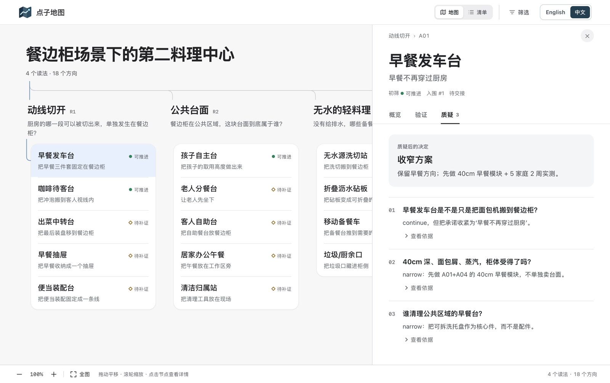

给牛穿的一双跑鞋
鞋究竟给谁穿？沿着 C01 看一个牛蹄印如何变成人穿的分趾鞋底，以及两轮质疑怎样把「跑完 10 公里不痛」写进通过条件。
选一个课题，点开一张卡片，看看怎么验证这个想法，以及哪一次质疑改变了它。
鞋究竟给谁穿？沿着 C01 看一个牛蹄印如何变成人穿的分趾鞋底，以及两轮质疑怎样把「跑完 10 公里不痛」写进通过条件。

哪些事可以搬出厨房？打开 A01，看早餐动线、蒸汽与清洁这三轮质疑如何收窄方案。再看 D04，比较「完整第二厨房」为何被淘汰。
把下面这句话复制给 Codex，再填上自己的设计课题。